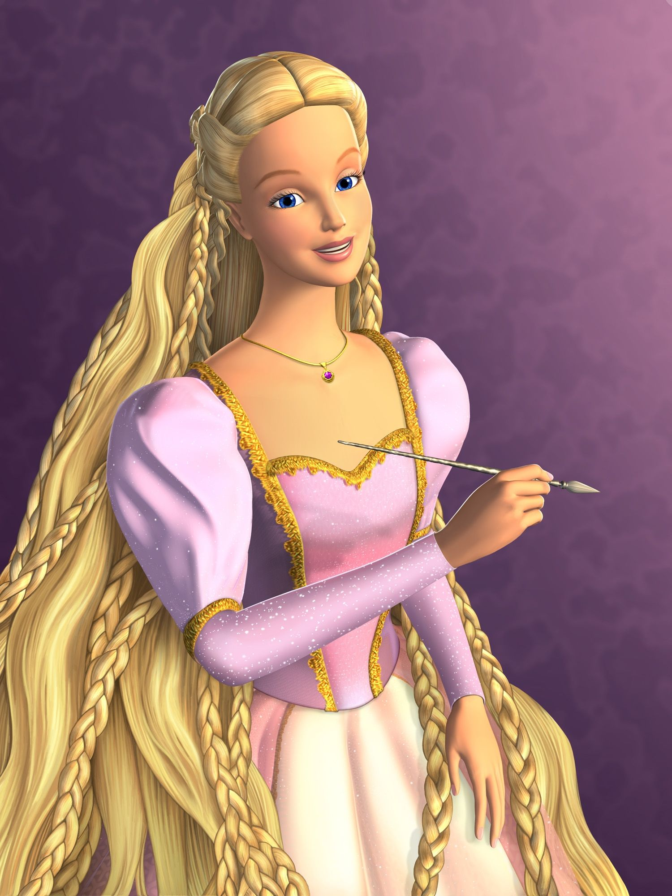

FICHA DE LA PELÍCULABarbie as Rapunzel
✦ AÑO: 2002 ✦ DURACIÓN: 82 min ✦ PAÍS: ✦ DIRECTOR: Owen Hurley ✦ GUIONISTAS: Elana Lesser, Cliff Ruby. ✦ MÚSICA: Arnie Roth ✦ GÉNERO: Animación. Fantástico. Infantil | Fantasía medieval, Cuentos |
Barbie es en esta ocasión Rapunzel, una joven con una larga cabellera rubia que se encuentra recluida en una torre por culpa de la malvada Gothel. Gracias a su mayor pasión, la pintura, consigue distraerse de la monotonía diaria pintando lugares a los que le gustaría ir.
Junto a su amiga Penélope, un fiel dragón, y el conejo Hobie, Rapunzel encontrará un pincel mágico que le permitirá escapar de su torre, al menos por el momento. En el mundo exterior hallará el amor y descubrirá todo lo que se está perdiendo al estar recluida. Si quiere empezar a vivir de verdad, deberá plantarle cara a Gothel, quien no dudará en usar su poderosa magia contra ella.

FICHA DE LA PELÍCULABarbie as Rapunzel
✦ AÑO: 2002 ✦ DURACIÓN: 82 min ✦ PAÍS: ✦ DIRECTOR: Owen Hurley ✦ GUIONISTAS: Elana Lesser, Cliff Ruby. ✦ MÚSICA: Arnie Roth ✦ GÉNERO: Animación. Fantástico. Infantil | Fantasía medieval, Cuentos |